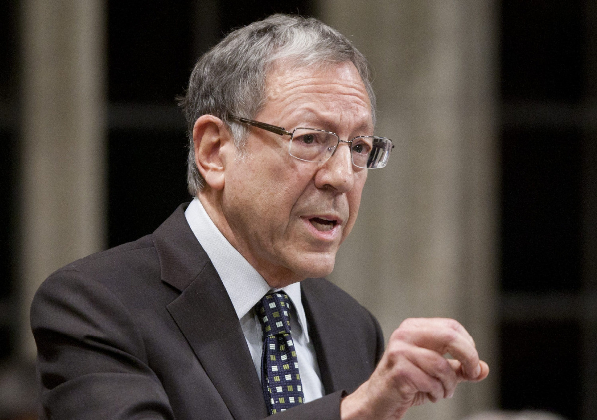

Irwin Cotler Nobel Peace Prize
February 19th, 2021
(((Irwin Cotler))), "human rights lawyer," apparently got nominated for a Nobel Peace Prize back in 2018. Well, some goyim had something to say about that.
Change:
TDC_ARTICLE_START
According to reports published in recent days, Irwin Cotler, the former Canadian Minister of Justice and Member of Parliament, has been nominated for the Nobel Peace Prize by former Canadian Prime Minister Paul Martin. We, the undersigned, believe Mr. Cotler gravely fails to match any criteria to be recognized an initiator of global peace as he has repeatedly proven to take sides with the most notorious political actors instigating conflicts and prolonging instability at the international stage.
Irwin Cotler has frequently used his status to prevent both his party and the Canadian government from condemning the Israeli violations of international law as well as their constant abuse of human rights against Palestinians. In his most recent remarks he has expressed regrets at the Canadian government's statement criticizing Israel's use of force for killing over 60 protesters near the Gaza border in just one day back in May 2018. Instead of condemning Israel’s discriminatory policies against Palestinians Mr. Cotler often speaks against the UN when the international community calls on Israel to abide by international law and respect the rights of the Palestinians. In the year 2000, when Canada voted in favor of a U.N. Security Council resolution calling on Israel to respect the rights of Palestinian protesters, Irwin Cotler attacked the Canadian foreign minister, Lloyd Axworthy, as well as his own party by calling the resolution “discriminatory”.
TDC_ARTICLE_STOP
(((Irwin Cotler)))
Imagine my shawk! A creepy faced Schlomo taking sides with the Jew Supremacist state of Occupied Palestine? How could this be? How could someone so pure of heart as Irwin Cotler defend the Jew Ethnostate of Israel murdering unarmed Palestinian Goyim?
TDC_ARTICLE_START
Cotler has also been the central figure lobbying the Canadian government in 2012 to remove MEK, an infamous terrorist group, from the Canadian list of Terrorist Organizations. MEK has been responsible for the killing of thousands during the Iran-Iraq war by joining forces with Saddam Hussein. They have also been engaged in numerous assassinations that resulted in killing of over 10,000 innocent Iranians in the 1980s. They were also involved in assassination of American citizens in the 1970s.
TDC_ARTICLE_STOP
You're telling me that Mr. Human Rights Freedom Democracy himself, Irwin Cotler, personally lead a charge to get an actual terrorist organization removed from the terrorist organization designation from our government? I mean (((how is this even possible)))????
TDC_ARTICLE_START
Finally, Irwin Cotler has served on the advisory board of the "United Against Nuclear Iran", a neo-conservative lobby organization that has vigorously sought to undermine the Nuclear Agreement with Iran known as JCPOA signed in 2015 between that country and the P5+1. The agreement lifts sanctions against Iran in return for curbing the country's nuclear program and serves as one of the key multilateral non-proliferation agreements endorsed by the United Nations Security Council to promote peace and mitigate tension in the Middle East region. Yet Irwin Cotler has consistently lobbied against the agreement since its initial signing in 2015 and was part of the campaign lobbying the US Congress to vote down the agreement. Once the agreement was signed he tirelessly began to undermine it by discouraging businesses from investing in Iran, essentially pressuring the US and the Canadian government to ignore their obligations vis a vis JCPOA and forcing them to consider imposing further sanctions on Iran.
TDC_ARTICLE_STOP
I mean this is just shocking. Beyond shocking. Irwin Cotler was someone who I definitely didn't think was a goy hating Jew Supremacist, so I really just have no words for this beyond shocking turn of events. I'm just so shocked. A level of shocked, that shouldn't even be possible.
More to the point, here's a little trivia list of Mr Cotler.
1) Portrays himself as a "Human Rights Lawyer"
2) Talks over and over about "muh Genocide", "muh failure to act."
3) Made it his personal mission to destroy White South Africa in the name of "muh Democracy." "muh rainbow coalition".
4) Denounces anyone who condemns the LITERAL KILLING OF UNARMED PALESTINIAN PROTESTERS BY THE RACIALLY SEGREGATED JEW ETHNOSTATE OF ISRAEL
5) Happy to go against his Liberal Party when it's bad for the goyim.
6) Supports actual terrorist organizations if they serve his interest as a Jew Supremacist.
7) Is a bloodthirsty Neo-Con.
It's important to understant. When Schlomo says "Human Rights", what they mean is the right to murder unarmed Palestinian Goyim without consequences. In fact, you criticising murderous jews is a violation of their human rights, goy.